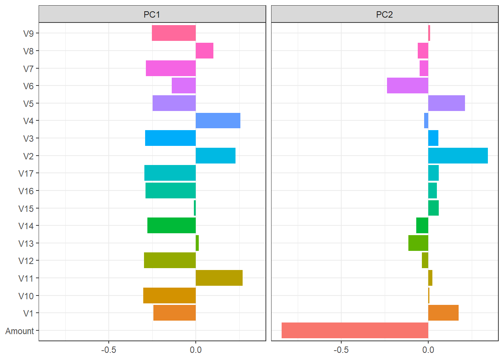

pacman::p_load(tidyverse, tidymodels, data.table, gt,
skimr, ggcorrplot, themis, solitude)2 제27회 ADP 실기 문제 풀이
1. 데이터 전처리
1.1. 데이터 탐색(EDA)을 수행하라.
필요한 패지키를 설치하고 불러온다.
데이터를 불러온다.
db_1a <- fread("test/27/data/problem1.csv")탐색적 자료분석(EDA)를 skim으로 수행한다.
db_1a %>% skim()| Name | Piped data |
| Number of rows | 1193 |
| Number of columns | 20 |
| Key | NULL |
| _______________________ | |
| Column type frequency: | |
| numeric | 20 |
| ________________________ | |
| Group variables | None |
Variable type: numeric
| skim_variable | n_missing | complete_rate | mean | sd | p0 | p25 | p50 | p75 | p100 | hist |
|---|---|---|---|---|---|---|---|---|---|---|
| Time | 0 | 1 | 91514.49 | 47896.08 | 60.00 | 50265.00 | 81797.00 | 136995.00 | 172676.00 | ▃▇▅▅▇ |
| V1 | 0 | 1 | -0.76 | 3.62 | -30.55 | -1.30 | -0.30 | 1.25 | 2.32 | ▁▁▁▁▇ |
| V2 | 0 | 1 | 0.54 | 2.66 | -33.64 | -0.44 | 0.23 | 1.11 | 19.17 | ▁▁▁▇▁ |
| V3 | 0 | 1 | -1.15 | 3.91 | -31.10 | -1.61 | -0.23 | 0.81 | 3.32 | ▁▁▁▁▇ |
| V4 | 0 | 1 | 0.78 | 2.35 | -4.29 | -0.61 | 0.33 | 1.34 | 12.11 | ▂▇▂▁▁ |
| V5 | 0 | 1 | -0.41 | 2.70 | -22.11 | -0.84 | -0.07 | 0.68 | 15.28 | ▁▁▇▅▁ |
| V6 | 0 | 1 | -0.28 | 1.51 | -10.89 | -1.02 | -0.38 | 0.30 | 6.27 | ▁▁▆▇▁ |
| V7 | 0 | 1 | -0.85 | 3.40 | -37.06 | -0.81 | -0.08 | 0.46 | 8.12 | ▁▁▁▂▇ |
| V8 | 0 | 1 | 0.15 | 2.47 | -37.35 | -0.22 | 0.07 | 0.45 | 20.01 | ▁▁▁▇▁ |
| V9 | 0 | 1 | -0.45 | 1.66 | -11.13 | -1.04 | -0.21 | 0.45 | 5.92 | ▁▁▃▇▁ |
| V10 | 0 | 1 | -0.90 | 2.90 | -23.23 | -0.88 | -0.23 | 0.29 | 7.14 | ▁▁▁▇▁ |
| V11 | 0 | 1 | 0.66 | 1.96 | -2.65 | -0.60 | 0.28 | 1.21 | 11.67 | ▇▇▁▁▁ |
| V12 | 0 | 1 | -1.01 | 3.00 | -17.23 | -0.97 | -0.01 | 0.51 | 3.11 | ▁▁▁▂▇ |
| V13 | 0 | 1 | 0.01 | 1.01 | -2.80 | -0.69 | 0.02 | 0.70 | 3.07 | ▁▅▇▃▁ |
| V14 | 0 | 1 | -1.17 | 3.23 | -18.49 | -0.95 | -0.10 | 0.42 | 3.89 | ▁▁▁▂▇ |
| V15 | 0 | 1 | 0.02 | 0.91 | -4.50 | -0.55 | 0.05 | 0.66 | 2.87 | ▁▁▆▇▁ |
| V16 | 0 | 1 | -0.63 | 2.27 | -14.13 | -0.70 | -0.06 | 0.46 | 3.14 | ▁▁▁▃▇ |
| V17 | 0 | 1 | -1.07 | 3.81 | -25.16 | -0.68 | -0.15 | 0.37 | 6.74 | ▁▁▁▇▃ |
| Amount | 0 | 1 | 88.89 | 220.14 | 0.00 | 3.54 | 20.99 | 77.49 | 3335.73 | ▇▁▁▁▁ |
| Class | 0 | 1 | 0.17 | 0.37 | 0.00 | 0.00 | 0.00 | 0.00 | 1.00 | ▇▁▁▁▂ |
탐색한 결과는 다음과 같다:
- 결측치는 존재하지 않음
- 데이터는 모두 숫자형(numeric)으로 구성되었으나, Class는 데이터 분포 등으로 미루어보아 요인(factor)로 판단
- Class는 1인 경우가 16.7%로 불균형 라벨로 판단
종속변수와 독립변수 관계를 시각화한다.
db_1a %>%
# id 생성
mutate(id = row_number()) %>%
# Wide-to-long 변환
pivot_longer(cols = !c(id, Class)) %>%
ggplot(aes(x = as.factor(Class), y = value)) +
geom_boxplot() +
facet_wrap(name ~ ., scales = "free") +
labs(x = "", y = "") +
scale_y_continuous(labels = comma)1.2. 변수간 상관관계를 시각화하고 전처리가 필요함을 설명하라
상관관계를 시각화한다.
db_1a %>% select(-c("Time", "Class")) %>%
cor() %>% ggcorrplot(type = "lower", lab = TRUE, lab_size = 2)V1-V3, V14-V17 등 상관계수가 0.75보다 큰 관계가 보인다. 이를 활용하여 종속변수를 측정하면 다중공선성 문제가 발생하여 정확한 독립변수 관계를 측정하기 어렵다.
2. 차원축소
2.1. 차원축소 방법 2가지 이상을 비교하고 한 가지를 선택하라.
차원축소 방법에는 PCA 주성분분석과, MDS 다차원 척도법, t-SNE가 있다. 주성분 분석은 데이터 분산을 최대한 보존하면서 차원을 축소하여 정보 손실이 적고 계산 비용이 낮다는 장점이 있지만, 선형 관계에 의존하여 비선형 구조가 잘 표현되기 어렵고 이상치에 민감하게 작동한다. 다차원 척도법은 데이터 샘플 거리를 보존하여 축소하는 방법으로 비선형 구조에도 잘 작동하게 거리 정보를 유지하지만, 계산 비용이 높고 데이터 크기에 민감하다. 마지막으로 t-SEN은 비선형 차원 축소로 시각화에 효과적이지만 하이퍼파라미터에 민감할 수 있다.
여기서는 가장 기본적이면서 데이터 손실을 줄이는 PCA 주성분분석을 활용한다.
PCA에 필요한 파라미터인 주성분 개수는 아래 scree 그래프로 파악한다.
db_1b <- db_1a %>% select(-c("Time", "Class"))
# PCA를 위한 recipe 생성
rec <- recipe(~., data = db_1b) %>%
step_center(all_predictors()) %>%
step_scale(all_predictors()) %>%
step_pca(all_predictors())
# recipe 준비 (학습)
prep_rec <- prep(rec)
# Scree 그래프
sdev <- prep_rec$steps[[3]]$res$sdev
percent_variation <- sdev^2 / sum(sdev^2)
data.frame(PC=paste0("PC",1:length(sdev)),
var_explained=percent_variation,
stringsAsFactors = FALSE) %>%
mutate(PC = fct_inorder(PC)) %>%
ggplot(aes(x=PC,y=var_explained))+geom_col()
2개 이상이 되면 주성분이 1개 더 생긴다고 크게 설명되지 않은 분산이 커지지 않는다. 따라서 주성분은 2개로 가정한다.
2개로 설정한 PCA 결과를 시각화하면 다음과 같다.
db_1b <- db_1a %>% select(-c("Time", "Class"))
# PCA를 위한 recipe 생성
rec <- recipe(~., data = db_1b) %>%
step_center(all_predictors()) %>%
step_scale(all_predictors()) %>%
step_pca(all_predictors(), num_comp = 2) # 주성분 2개로 한정
prep_rec <- prep(rec)
tidy_rec <- tidy(prep_rec, number = 3)
tidy_rec %>%
filter(component %in% paste0("PC", 1:2)) %>%
mutate(component = fct_inorder(component)) %>%
ggplot(aes(value, terms, fill = terms)) +
geom_col(show.legend = FALSE) +
facet_wrap(~component, nrow = 1) +
labs(y = NULL, x = NULL) +
theme_bw()
3. 오버샘플링과 언더샘플링
3.1. 각 샘플링의 장점과 단점을 설명하고 한 가지를 추천하라.
오버샘플링은 소수 클래스의 샘플 수를 늘려 전체 데이터셋의 균형을 맞추는 방법이다.
- 장점: 소수 클래스 정보를 모두 활용할 수 있어, 정보 손실이 없음
- 단점: 샘플이 과화게 증가하면 모델 과적합 위험
언더샘플링은 다수 클래스의 샘플 수를 줄여서 전체 데이터셋의 균형을 맞추는 방법이다.
- 장점: 다수 샘플이 과하게 많을 경우, 이를 줄여 모델 과적합 방지
- 단점: 샘플 줄이는 과정에서 중요한 정보를 잃을 수 있음
해당 데이터셋에는 오버샘플링을 적용한 것을 추천한다. Class의 소수 클래스의 개수가 20개로, 언더샘플링을 사용할 시 다수 샘플의 정보를 과도하게 잃기 때문이다.
table(db_1a$Class)
0 1
993 200 3.2. 알고리즘 2가지 이상을 비교하고 성능을 측정하라.
두 오버샘플링 알고리즘, 1) SMOTE과 2) upsampling를 사용한다.
db_1c <- db_1a[, -c("Time")]
# Recipe 만들기
rec <- recipe(Class ~ ., data = db_1c) %>%
step_mutate(Class = as.factor(Class)) %>%
step_center(all_predictors(), -all_outcomes()) %>%
step_scale(all_predictors(), -all_outcomes()) %>%
step_pca(all_predictors(), -all_outcomes(), num_comp = 2) # 주성분 2개로 한정
# 모델 정의
model_spec <- decision_tree() %>%
set_engine("rpart") %>%
set_mode("classification")
# SMOTE
rec_smote <- rec %>% step_smote(Class) %>% prep(db_1c) %>% bake(new_data = NULL)
rec_upsample <- rec %>% step_upsample(Class) %>% prep(db_1c) %>% bake(new_data = NULL)
bind_rows(rec_smote %>% mutate(model = "smote"),
rec_upsample %>% mutate(model = "upsample")) %>%
ggplot(aes(x = PC1, y = PC2, color = model)) +
geom_point(alpha = 0.8) +
theme_bw()위 그래프에서 보이듯, 단순히 소수 샘플을 늘린 upsample 알고리즘에 비해 SMOTE 알고리즘이 더 다양한 차원 정보를 포함하고 있어 더 좋은 성능을 보인다고 할 수 있다.
3.3. 현재까지 전처리한 데이터를 통해 모델 수행 후, 결과를 분석
set.seed(2023)
db_1c <- db_1a[, -c("Time")]
# Recipe 만들기
rec <- recipe(Class ~ ., data = db_1c) %>%
step_mutate(Class = as.factor(Class)) %>%
step_center(all_predictors(), -all_outcomes()) %>%
step_scale(all_predictors(), -all_outcomes()) %>%
step_pca(all_predictors(), -all_outcomes(), num_comp = 2) # 주성분 2개로 한정
# 모델 정의
model_spec <- decision_tree() %>%
set_engine("rpart") %>%
set_mode("classification")
# SMOTE
rec_smote <- rec %>% step_smote(Class) %>% prep(db_1c)
wk_smote <- workflow() %>% add_recipe(rec_smote) %>% add_model(model_spec)
cv <- vfold_cv(db_1c)
result_smote <- fit_resamples(
wk_smote,
resamples = cv,
control = control_resamples(save_pred = TRUE))
predictions <- result_smote %>%
collect_predictions()
collect_metrics(result_smote)# A tibble: 2 × 6
.metric .estimator mean n std_err .config
<chr> <chr> <dbl> <int> <dbl> <chr>
1 accuracy binary 0.960 10 0.00671 Preprocessor1_Model1
2 roc_auc binary 0.922 10 0.0185 Preprocessor1_Model1predictions %>%
yardstick::roc_curve(Class, .pred_0) %>% autoplot()
분석 결과, 정확도는 95.9%, AUC는 92.1%로 분류 성능을 보인다.
4. 이상탐지 모델
2.1 4.1. 이상탐지 모델 2가지 이상을 기술하고 장점과 단점을 설명해라.
- Isolation Forest: 데이터 분포를 가정하지 않고 작동하며, 이상값과 정상값을 분리하는 데 필요한 경로 길이를 기반으로 이상 점수를 계산합니다. 이상값은 일반적으로 더 짧은 경로로 분리될 수 있으므로, 이상 점수가 높을수록 해당 데이터 포인트는 이상값일 가능성이 높음
- 장점: 대용량 데이터에 효과적이며, 별도의 정규화 과정이 필요 없음
- 단점: 어떻게 이상치를 분리했는지 파악이 어려워 데이터 해석이 힘듦
- Autoencoder: 비지도 학습의 일종으로, 원본 입력을 재구성하는 방식으로 작동함. 이상 탐지에서는, 정상 데이터를 사용하여 Autoencoder를 훈련시키고, 이를 사용하여 입력 데이터를 재구성, 이상한 데이터는 재구성 오차가 크게 나타남. 이 재구성 오차를 임계값과 비교하여 데이터 포인트가 이상인지 판별함.
- 장점: 비선형성 패턴을 인코딩하고 특성 선택 과정이 필요 없음
- 단점: 네트워크 아키텍처에 의존하므로 복잡함
2.2 4.2. 모델 구현하고 3에서 만든 모델과 비교
db_1c <- db_1a[, -c("Time")]
# Recipe 만들기
rec <- recipe(Class ~ ., data = db_1c) %>%
step_mutate(Class = as.factor(Class)) %>%
step_center(all_predictors(), -all_outcomes()) %>%
step_scale(all_predictors(), -all_outcomes()) %>%
step_pca(all_predictors(), -all_outcomes(), num_comp = 2) # 주성분 2개로 한정
# SMOTE
rec_smote <- rec %>% step_smote(Class) %>% prep(db_1c)
wk_smote <- workflow() %>% add_recipe(rec_smote) %>% add_model(model_spec)
data_preprocessed <- juice(rec_smote)
model <- isolationForest$new()
model$fit(data_preprocessed[, -which(names(data_preprocessed) == "Class")])INFO [00:34:59.697] dataset has duplicated rows
INFO [00:34:59.733] Building Isolation Forest ...
INFO [00:34:59.772] done
INFO [00:34:59.773] Computing depth of terminal nodes ...
INFO [00:35:00.089] done
INFO [00:35:00.166] Completed growing isolation forestscores <- model$predict(data_preprocessed[, -which(names(data_preprocessed) == "Class")])
data_preprocessed$anomaly_score <- scores
quantile(data_preprocessed$anomaly_score$anomaly_score) 0% 25% 50% 75% 100%
0.5820092 0.5827973 0.5847722 0.5955529 0.7654805 # 이상치 점수를 기반으로 이상치 판단
threshold <- 0.6
data_preprocessed$anomaly <- ifelse(data_preprocessed$anomaly_score > threshold, 1, 0)
# SMOTE 후에 모델 훈련 및 성능 측정
ttt <- as.data.table(data_preprocessed$anomaly)
data_preprocessed$anomaly <- as.factor(ttt$anomaly_score)
table(data_preprocessed$Class, data_preprocessed$anomaly)
0 1
0 929 64
1 649 344tttt <- data_preprocessed %>%
conf_mat(truth = Class, estimate = anomaly)
class_metrics <- metric_set(accuracy, sens, spec)
data_preprocessed |>
class_metrics(truth = Class, estimate = anomaly)# A tibble: 3 × 3
.metric .estimator .estimate
<chr> <chr> <dbl>
1 accuracy binary 0.641
2 sens binary 0.936
3 spec binary 0.346참고한 사이트
- https://amaruak00.github.io/2022/12/17/adp27th.html
- https://www.datamanim.com/dataset/ADPpb/00/27.html
- https://www.kaggle.com/code/johyunkang/adp-27/notebook